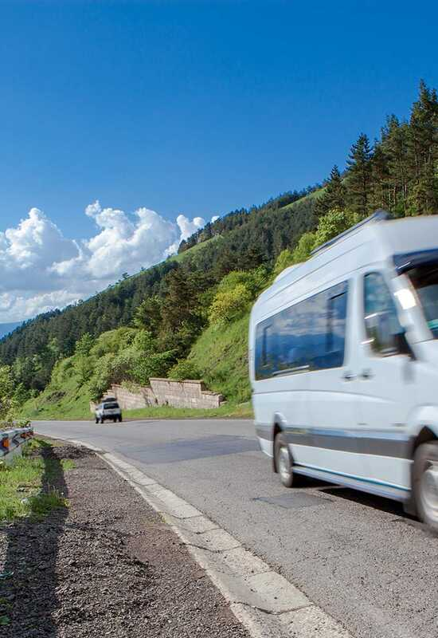

FCE 2026 - Test 9
Reading and Use of English (75 minutes)
Listening (about 40 minutes)
Each recording is played twice. Use headphones and read the questions before you listen.
Writing (80 minutes)
Part 1 - Essay (compulsory)
In your English class you have been discussing where people choose to live. Your teacher has asked you to write an essay for homework.
Write an essay using all the notes and giving reasons for your point of view.
Notes:
Write about:
1. work and education opportunities
2. the environment and health
3. ___________ (your own idea)
Write your essay in 140 - 190 words.
Part 2 - Choose ONE task
Write an answer to one of the questions (a - c) in this part. Write your answer in 140 - 190 words in an appropriate style.
(a) Article: You see this announcement on an English-language website: The Best Way to Keep Fit! People stay active in many different ways. What is your favourite way to exercise? Write an article telling us what you do, why you enjoy it, and why others should try it.
(b) Email: Your English-speaking friend Sam is starting at a new school next week and is feeling very nervous. Write an email to Sam giving advice on how to make a good first impression, how to make new friends, and suggesting a way to stay relaxed.
(c) Report: Your town council is offering a grant to improve the local library. The library manager has asked you to write a report on the current facilities. You should describe what is good about the library, what needs updating, and recommend how the money should be spent.
Sending opens your email app with your text. Very long texts are copied to the clipboard so you can paste them.
Speaking (14 minutes)
Practise with a partner or teacher. The real test lasts about 14 minutes.
Part 1 - Interview (2 minutes)
- What is your favourite day of the week, and why?
- Tell me about a good friend of yours.
- Do you prefer shopping online or going to physical stores?
- What are your plans for this coming weekend?
Part 2 - Long turn (1 minute each)
Candidate A: Compare the pictures and say why people might choose to give these different types of gifts, and how the receiver might feel.
Candidate B: Compare the pictures and say what the advantages and disadvantages of travelling in these ways might be.
Candidate A's pictures: Giving Gifts
Compare the pictures and say why people might choose to give these different types of gifts, and how the receiver might feel.
Candidate B's pictures: Ways of Travelling
Compare the pictures and say what the advantages and disadvantages of travelling in these ways might be.

Part 3 - Collaborative task (3 minutes)
What is important when organising a successful local festival? Discuss the ideas below, then decide which TWO are the most important to attract visitors.
- live music and entertainment
- a variety of food stalls
- effective advertising
- activities for young children
- a central, easy-to-reach location
Part 4 - Discussion (4 minutes)
- Why do you think some local traditions and festivals are disappearing?
- Do you think large community events are good for the local economy? Why?
- Some people say that modern entertainment (like the internet and streaming) makes people less interested in attending live events. Do you agree?